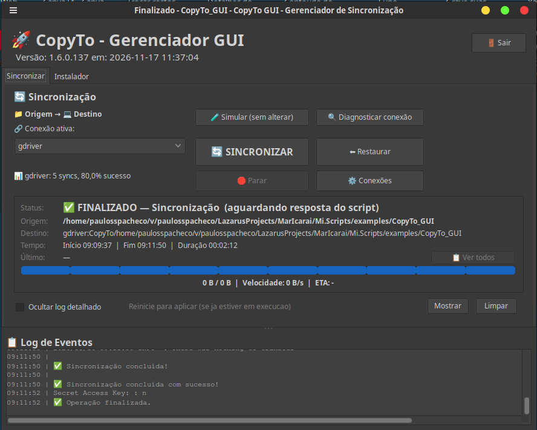

Versão do programa descrita aqui: 1.6.0.137 (17/11/2026)
O CopyTo guarda uma cópia de segurança das suas pastas na nuvem (Google Drive, OneDrive, Dropbox e outros) ou em outro lugar de sua escolha, como um disco do computador ou o celular.
Você escolhe uma pasta, clica em SINCRONIZAR, e o CopyTo envia para a nuvem o que é novo ou mudou.p
Três ideias para guardar:
O CopyTo usa três programas de apoio: Bash, rclone e jq. O botão Instalar (seção 3) cuida deles para você.
Ao abrir o programa pela primeira vez, ele mostra a aba Instalador. Há dois passos: instalar e conectar um serviço.
Ao lado, o programa mostra se as ferramentas necessárias estão presentes: ✅ Bash | ✅ rclone | ✅ jq. Um ❌ indica que falta alguma delas. Clique em Instalar de novo para corrigir.
No Windows, o Git Bash é instalado automaticamente, se necessário.
Se você clicar em Atualizar a qualquer momento, o programa confere de novo o estado da instalação.
Um provider (ou conexão) é o lugar onde as cópias ficam guardadas.
| Serviço | O que acontece |
|---|---|
Google Drive (gdriver), OneDrive, Dropbox |
O programa avisa que vai abrir o navegador. Confirme, entre na sua conta e autorize o acesso. |
| IDrive E2, Backblaze B2 | Pedem os dados da conta: endereço (endpoint), região, nome do bucket e as chaves de acesso. Você os encontra no painel do serviço. |
Pasta local (local) |
Pede a pasta onde as cópias serão guardadas, por exemplo em um HD externo. |
| Celular | Veja a seção 10. |
Para remover uma conexão, escolha-a na lista (ela precisa estar com ✅) e clique em Remover. Os arquivos que já estão na nuvem não são apagados.
Dica: se você acabou de instalar e ainda não tem nenhuma conexão, o programa pode perguntar "Onde guardar suas cópias?" com as opções Google Drive, OneDrive ou Configurar depois.
A aba Sincronizar é a tela do dia a dia.
gdriver). O CopyTo lembra a última escolha.Enquanto trabalha, o programa bloqueia os botões para evitar duas operações ao mesmo tempo. Eles voltam ao normal quando terminar.
A nuvem repete o caminho completo da pasta no seu computador, dentro de uma pasta chamada CopyTo. Exemplo do print abaixo:
/home/paulosspacheco/v/paulosspacheco/LazarusProjects/MarIcarai/Mi.Scripts/examples/CopyTo_GUIgdriver:CopyTo/home/paulosspacheco/v/paulosspacheco/LazarusProjects/MarIcarai/Mi.Scripts/examples/CopyTo_GUIAssim, pastas com o mesmo nome em lugares diferentes nunca se misturam.

Exemplo: sincronização concluída com sucesso.
| Parte da tela | O que significa |
|---|---|
Título da janela (Finalizado - CopyTo_GUI ...) |
Mostra o estado mesmo com a janela minimizada: NN%, Processando, Finalizado, Finalizado com erro ou Interrompido. Você acompanha pela barra de tarefas. |
| Conexão ativa | O serviço escolhido. Abaixo dele, um resumo: gdriver: 5 syncs, 80,0% sucesso — quantas sincronizações já foram feitas com ele e quantas deram certo. |
| Status | A fase atual (veja a tabela 4.4), seguida do nome da operação. |
| Origem / Destino | De onde sai e para onde vai a cópia. Caminhos longos são encurtados para caber na tela. |
| Tempo | Durante a cópia: hora de início e tempo decorrido. Depois: Início, Fim e Duração. |
| Último | O último arquivo tratado, com a ação: Copiado, Alterado, Movido ou Apagado. Mostra — quando nenhum arquivo foi tratado. |
| Ver todos (N) | Abre a lista de todos os arquivos da operação. Fica apagado enquanto não há arquivos. |
| Barra de progresso | Mostra o avanço. Quando o programa ainda não sabe o percentual, ela fica correndo de um lado a outro. |
| Linha abaixo da barra | Bytes enviados e total, velocidade e tempo restante (ETA). No exemplo: `0 B / 0 B |
O que o exemplo mostra: a sincronização terminou (FINALIZADO), levou 2 minutos e 12 segundos e não enviou nenhum byte. Isso é normal quando a pasta já estava toda na nuvem, sem arquivos novos ou alterados. O programa gasta esse tempo conferindo se está tudo igual.
| Status | Significado |
|---|---|
| Pronto | Nada em andamento. |
| AGUARDANDO CONFIRMAÇÃO | O programa espera uma resposta sua antes de começar. Leia a pergunta e responda. |
| PROCESSANDO | Em andamento. |
| FINALIZADO | Terminou bem. |
| FINALIZADO COM ERRO | Terminou com problema. Leia o log (seção 8) e veja a seção 12. |
| INTERROMPIDO | Você mandou parar. |
Simular (sem alterar) faz todo o trabalho de conferência, mas não envia, não move e não apaga nada. É a melhor forma de ver o que a sincronização faria.
Sem nada a fazer, aparece: "Nenhum arquivo seria copiado ou movido para o backup." Use Ver todos para a lista completa.
Recomendado na primeira vez que você sincroniza uma pasta, ou depois de apagar muita coisa no computador.
Diagnosticar conexão testa se tudo está funcionando: confere o rclone e a configuração do serviço, testa o login, as permissões e a pasta raiz, e mostra informações úteis em caso de problema.
Não pede pasta e não altera nenhum arquivo. Use quando a sincronização falhar ou depois de ficar muito tempo sem usar.
Restaurar copia da nuvem de volta para o seu computador.
A restauração é segura:
A parte de baixo da janela registra tudo o que o programa faz, com a hora de cada linha. É o primeiro lugar para olhar quando algo não saiu como esperado.
Ao fim de cada operação, o log mostra um quadro: ✅ SUCESSO ou ❌ FALHOU.
Clique em Parar para interromper o que está em andamento. O status muda para INTERROMPIDO.
Se você tentar fechar a janela com uma operação rodando, o programa pergunta:
Atenção: a instalação não pode ser interrompida com segurança. Sair no meio dela pode deixar o CopyTo incompleto. Aguarde terminar.
O CopyTo pode copiar suas pastas para o armazenamento do celular, pela rede Wi-Fi da sua casa. O computador e o celular precisam estar no mesmo Wi-Fi.
celular. Ele explica cada passo e, no final, mostra um quadro com IP, porta, usuário e senha. Anote esses dados.8022), o usuário e a senha do quadro.As cópias ficam em uma pasta CopyTo no armazenamento interno do celular. Use o app Arquivos para encontrá-la.
Se o roteador mudar o IP do celular, o CopyTo tenta achá-lo sozinho. O mais simples é reservar um IP fixo para o celular nas configurações do roteador.
Quem prefere atalhos pode abrir a sincronização de uma pasta direto do terminal ou de um atalho:
copytogui --sync-folder <conexão> [pasta]
A instalação cria atalhos do CopyTo GUI no seu sistema. Eles são removidos na desinstalação.
| Sintoma | O que fazer |
|---|---|
| Os botões SINCRONIZAR, Simular, Diagnosticar e Restaurar estão apagados | Veja a mensagem em Estatísticas: "Instale o CopyTo primeiro" (use a aba Instalador) ou "Configure um provider primeiro" (adicione uma conexão). Se houver outra operação rodando, espere ela terminar. |
| Aviso "Limite temporário do Google Drive" | O Google limitou os pedidos por um tempo. Espere alguns minutos e tente de novo. Os arquivos já copiados são mantidos. |
| FINALIZADO COM ERRO | Clique em Diagnosticar conexão e leia o log. Os erros mais comuns são internet fora do ar, autorização vencida (adicione a conexão de novo) e falta de espaço na nuvem. |
| A tela mostra "(aguardando resposta do script)", mas o log já diz "Operação finalizada" | A cópia terminou. Pode seguir usando o programa normalmente. |
| Navegador não abriu ao adicionar o Google Drive | Confirme que há um navegador padrão e tente adicionar de novo. |
| Celular: Não foi possível conectar | Abra o Termux, confira o IP e confirme que os dois aparelhos estão no mesmo Wi-Fi. |
| Celular: parou no meio da cópia | O Android pode ter encerrado o Termux. Abra-o de novo, mantenha a tela ligada e sincronize outra vez. |
Seus arquivos na nuvem e no computador não são apagados. Só os programas e as configurações do CopyTo são removidos.
| Termo | Significado |
|---|---|
| Provider / Conexão | O serviço ou lugar onde as cópias são guardadas. |
| Sincronizar | Deixar a nuvem igual à sua pasta: envia o que é novo ou mudou. |
| Simular | Mostrar o que seria feito, sem fazer. |
| Restaurar | Trazer arquivos da nuvem de volta ao computador. |
| Backup | Pasta, no mesmo serviço, que guarda os arquivos alterados ou removidos. |
| Log | Registro, linha a linha, do que o programa fez. |
| ETA | Tempo estimado para terminar. |
| rclone | Programa de apoio que faz a transferência dos arquivos. |